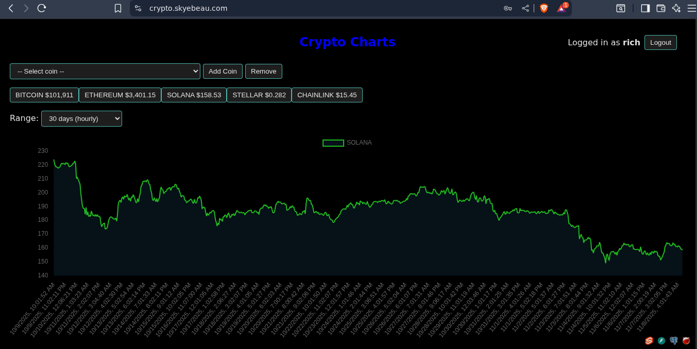
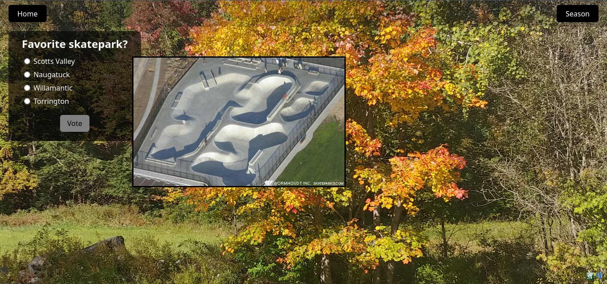

Featured Projects
AI Backend Platform
Python | FastAPI | PostgreSQL | pgvector | Ollama | RAG
An AI-powered document knowledge platform featuring document ingestion, text chunking, vector embeddings, semantic search, and retrieval-augmented question answering. Integrates local language models and evaluates answer quality, source attribution, and the ability to abstain when information is unavailable.

Crypto Charts
FastAPI | PostgreSQL | React | Svelte | Chart.js
A cryptocurrency tracking application with JWT authentication, user accounts, saved watchlists, and live price charts. Features an independent FastAPI backend and separately developed React and Svelte frontends.

Django Portfolio / Polls App
Django | Python | PostgreSQL | HTML/CSS
A deployed Django application hosted on FreeBSD using Gunicorn and Nginx. Demonstrates relational data models, CRUD operations, templates, static assets, and production deployment.
Blockchain Explorer & Charts
Elixir | Phoenix | Blockchain | Cryptocurrency
An Elixir and Phoenix application that retrieves live blockchain blocks and provides live charts for Bitcoin, Ethereum, and the top 50 cryptocurrencies.